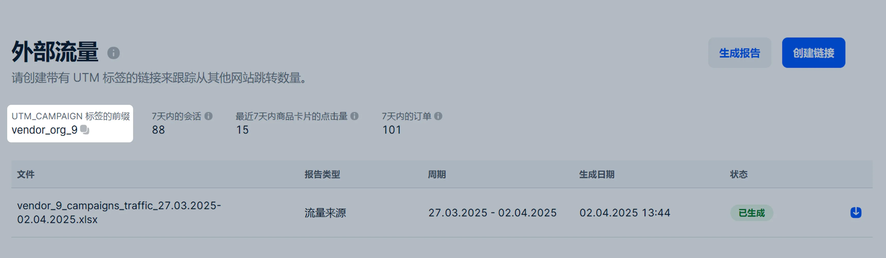
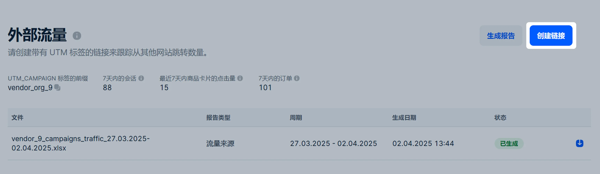
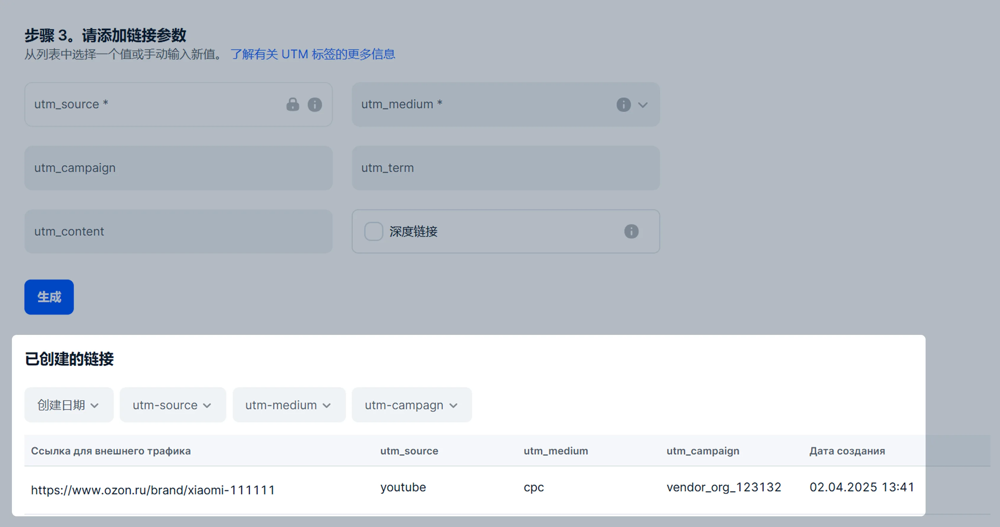
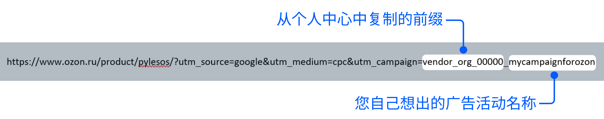
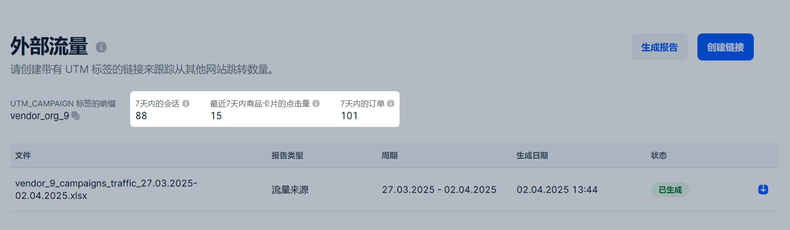
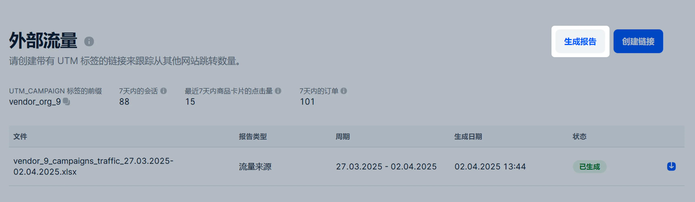
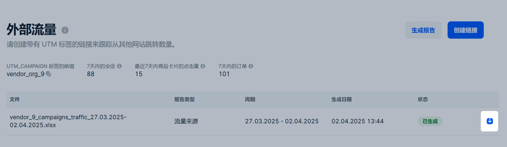

外部流量分析可以帮助您跟踪外部平台上的广告效果，例如：在搜索系统和社交网络的上下文广告。
如何运行：
您创建含UTM-标签的链接并将其用于外部站点的广告。
系统搜集标签数据，例如：多少人将商品添加到购物车并且多少人从广告跳转到订单页面并完成支付。
您可以在个人中心中查看本周的主要指标或下载含详细分析的报告。
什么是UTM标签
为了使系统能够收集到页面跳转信息和通过您的外部活动完成的订单，需要正确标记链接。UTM标签帮助识别活动。
系统按照“utm_campaign”参数跟踪活动。该值由两部分组成：
前缀。前缀包含一组独特的字符组合，用于追踪买家通过您的外部广告访问 Ozon 的来源。格式为“vendor_org_XXXXX”，其中“XXXXX”为您的公司 ID。
请在 推广 → 外部流量 部分的 UTM_CAMPAIGN标签前缀 字段中复制前缀。

广告活动名称。您可以自行命名广告活动名称，此项非必填，但有助于区分不同广告活动的统计数据。可以使用拉丁文、数字和下划线。
其他UTM-标签参数 — utm_source, utm_medium, utm_content 和 utm_term — 照常填写，没有特殊要求。
为外部广告创建链接
通过构造函数
链接生成器适用于 ozon.ru、ozon.kz、ozon.by 域名。您可以获得某个模块及其子模块的详细分析报告：
/product/ — 商品卡片；
/brand/ — 品牌页面；
/seller/ — 店铺页面；
/highlight/ — 促销活动页面或商品精选页面。
链接示例： https://www.ozon.ru/brand/dom-i-sad/。
如果您想创建带有UTM标记的链接，您可以使用内置生成器。它将自动向源链接添加所需的vendor_org_前缀。
在页面 推广 → 外部流量 点击 创建链接 。

在字段中粘贴最多100个您要标记的链接。每个链接必须另起一行，否则我们无法识别。
在 投放位置 字段中，从列表中选择所需的广告网络。如果您的广告网络不在列表中，那么请选择：
其他广告网络。
其他。如果您不在广告网络上投放广告，比如在博主处投放。
请填写UTM参数。
必填UTM参数：utm_source——流量的输出来源。如果您在第3步选择了特定广告网络中的一个，比如myTarget，那么参数将自行填写——而其他情况下您将需要手动将其填写。
utm_medium——广告类型。比如电子邮件群发或横幅。
非必填参数：
utm_campaign——公司名称。
utm_term——关键词。根据该关键词在搜索结果中显示广告。
utm_content——额外信息。如果不同广告的其他标记相同，那么该额外信息可以帮助您区分来自不同广告的跳转。
无需输入必填的vendor_org前缀，它将自动添加。 请根据上方示例手动填写非必填参数或从列表中选择值。
针对特定广告网络可以选择该网络支持的宏：宏将收集有关广告绩效的更多数据——比如来自哪个区域的用户根据链接进行了跳转，用户的年龄以及他观看广告的设备。
请启用 深度链接 — 其将有助于生成一个链接，该链接可在任何设备上的 Ozon 应用程序中打开。 如果不启用，应用程序中的链接可能无法正常工作。
如果您在链接中使用模板参数或宏，则无法启用深度链接。
如果用户没有Ozon 应用程序，生成的链接将使用延迟深度链接机制。 其将先引导用户安装应用程序，当用户安装应用程序并首次打开时，将跳转到链接原本指向的页面。
请点击 生成 。生成的链接将显示在 已生成链接 模块中。

手动
请在您的商品链接中添加utm_campaign标签。该标签必须包含 外部流量 部分 UTM_CAMPAIGN 标签前缀”字段中 的唯一前缀。 您可以选择在名前缀后添加下划线和您的广告活动名称。
如果需要，请以“&”分隔输入包含源数据和广告活动类型的标记：
utm_source
utm_medium
utm_term
utm_content
链接例子：

链接生存时间
无深度链接的链接永久有效。 其他链接自上次点击后有效期为 30 天，之后将不再指向您的商品，而是跳转到 Ozon 应用程序。
来自外部广告的信息
我们从您的外部广告活动中的UTM-标签收集订单数据。
直接订单
在用户模块中购买。 这些是用户通过链接进入并在他们离开网站或停止在那里活动之前的订单。
直接订单是：
通过商品链接进入完成的购物；
买家通过外部广告进入您的商店并完成的任何购物。
例子
出售蓝色鞋子的链接，用户从您的商店点击红色鞋子，然后下单 —— 我们在统计中视为直接订购。
归因窗口框架下的订单
用户在点击您的链接后30天内进行的购买。
对于外部广告，我们从使用 Ozon 促销工具创建的活动中独立收集数据。我们正在按照“last click“模型工作 —— 我们将转换结果分配给最后一个外部渠道，在购买商品前用户与该渠道进行了互动。
例子
用户在第三方网站上点击了您的链接，查看了靴子，但没有订购。两周后他在Yandex搜索中进入链接并订购了这些靴子。购物将认为是Yandex外部广告活动的结果，因为用户最后点击的是该链接。
您在Yandex中设置了靴子的外部广告，同时在Ozon内部工具 —— 搜索中推广启用。买家点击了Yandex的靴子广告，查看了卡片，但并没有下订单。一周后他回到Ozon，从搜索广告中的靴子商品广告页面进入并完成购买。订单反映于外部广告和搜索引擎推广的统计数据中。
查看外部广告的统计数据
在主页 推广 → 外部流量 显示过去7天内的标签总点击次数和订单次数。

您可以在在报告中查看更多信息。有关下载详细统计报告的说明：
在 推广 → 外部流量 页面点击 生成报表 。

选择报告类型：订单报告或流量来源报表。
指定要查看数据的周期。周期不得超过365天。
点击 生成 。报告状态将自动更新，并在其参数旁边显示。
报告生成完成后，旁边将出现下载按钮 ，点击即可下载。

您可以在报告生成后两个月内下载报告。
外部流量报告内容
任何外部流量报告都以XLSX格式呈现，报告内容：
属性 —— 商品和渠道的特征，按此特征我们搜集信息。例如，如果您在社交网络上有多个广告活动，如果您在标签中指出，属性将显示流量属于哪一活动。
指标 —— 我们在活动中收集的数据，例如订单数量和总成本。
属性和指标会因报告类型而有差异。
报告类型
流量来源报告
在该报告类型中搜集了包含按日期和utm-标签分类的所有用户模块信息。报告指出，用户在这些模块和归因窗口中购买了哪些商品，在购物车和收藏中添加了多少次和其他指标。
归因窗口 是观看广告后用户对广告采取行动的时间段。
报告属性：
Дата (日期) — 是我们收集用户会话数据的周期。
Source/Medium — 是用户访问网站的来源。显示为utm_source和 utm_medium的组合。
Campaign — utm_campaign值：您指定的前缀和广告活动名称。
Content — 是utm_content参数的值。
Term — 是显示广告的关键词。utm_term参数的值。
Тип продвигаемой страницы (推广的页面类型) — 指链接所指向的 Ozon 网站模块。它可以是商品卡片、店铺页、品牌页或商品专辑页。
报告标签：
Сессии （会话）— 是指定日期内的用户会话数量。
Переходы на карточку товара с продвигаемой страницы （从推广页面跳转到商品卡片的次数）— 统计用户通过您的推广链接，从该页面跳转到商品卡片的总次数。如果您推广的是店铺、品牌、促销活动或商品精选页面，则统计该页面上所有商品卡的跳转总次数。
Добавления в корзину товаров с продвигаемой страницы （通过推广页面添加到购物车的商品数量）— 统计在同一次会话中，有多少人将商品加入购物车。
Добавления в избранное товаров с продвигаемой страницы （从推广页面添加到收藏夹的商品数量）— 统计在同一次会话中，有多少人将商品加入收藏夹。
Средняя длительность сессии: чч:мм:сс （平均会话时长： hh:mm:ss）— 是用户点击链接后在网站上平均停留的时间。 以小时、分钟和秒钟为单位。
Заказано товаров с продвигаемой страницы в рамках сессии （在同一会话中从推广页面下单的商品数）— 用户通过推广链接，在同一会话内下单的商品数量。
Суммарная цена товаров с продвигаемой страницы, заказанных в рамках сессии （在同一会话中从推广页面下单商品的总价）— 用户通过链接下单，订单总金额（不含优惠）。
Суммарная стоимость товаров с продвигаемой страницы, заказанных в рамках сессии （在同一会话中从推广页面下单商品的总价（含折扣））— 用户通过链接下单，订单总金额（含优惠）。
Заказано товаров с продвигаемой страницы в рамках окна атрибуции （在归因窗口内（30天）通过推广页面下单的商品数）— 用户在点击链接后30天内下单的商品总数。
Суммарная цена товаров с продвигаемой страницы, заказанных в рамках окна атрибуции (руб.) （在归因窗口内（30天）通过推广页面下单商品的总价（不含折扣））— 用户在点击链接后30天内下单的所有商品总金额（不含优惠）。
Суммарная стоимость товаров с продвигаемой страницы, заказанных в рамках окна атрибуции (руб.) （在归因窗口内（30天）通过 推广页面,下单商品的总价（含折扣））— 用户在点击链接后30天内下单的所有商品总金额（含优惠）。
例子
用户从您的广告点击进入“蓝色靴子”的商品卡片，然后进入到“红色靴子”和“黄色靴子”，将黄色靴子添加到购物车并下单。这双靴子的价格是 1000 卢布，有 10% 的折扣，用户在网站上停留了 5 分钟。 一周后，用户返回商品卡片并订购两双含折扣的靴子。 表中的指标将如下所示：
会话数 |
跳转到商品卡次数 |
从推广页加入购物车次数 |
从推广页加入收藏次数 |
会话平均时长 |
会话内从推广页下单商品数 |
|---|---|---|---|---|---|
1 |
3 |
1 |
0 |
00:05:00 |
1 |
在同一会话中从推广页面下单商品的总价 |
在同一会话中从推广页面下单商品的总金额 |
归因窗口内推广商品被下单的数量 |
在归因窗口内所订购的推广商品的总价 |
在归因窗口内所订购的推广商品的总金额 |
|---|---|---|---|---|
1000 |
900 |
3 |
3000 |
2700 |
商品订单报告
报告中收录了每件商品的订单信息：数量、单价和总金额。报告由两个表组成：商品统计与订单明细。
报告属性：
Дата заказа （订单日期）。
SKU/название товара （SKU/名称）。
ID бренда （品牌 ID）。
Название бренда （品牌名称）。
ID продавца （卖家ID）。
Название компании （活动名称）。
ID коммерческой категории товара （商品的商业类别ID）。
Название коммерческой категории товара （商品商业类别名称）。
Source/Medium — 是用户访问网站的来源。显示为utm_source和 utm_medium的组合。
Campaign — utm_campaign参数值：您指定的前缀和广告活动名称。
Content — 是utm_content参数的值。
Term — 是utm_term参数的值。
商品统计表指标：
Заказано данного товара в рамках сессии （在会话中订购的该商品数量）— 用户点击链接后在会话内下单的商品数量。
Суммарная цена для данного товара по заказам в рамках сессии （在会话内的商品订单总价）— 用户点击链接后在会话内下单该商品的总金额（不含优惠）。
Суммарная стоимость для данного товара по заказам в рамках сессии （该商品在会话内的订单总成本）— 用户点击链接后在会话内下单该商品的总金额（含优惠）。
Заказано данного товара в рамках окна атрибуции （在归因窗口内订购的该商品数量（件））— 用户点击链接后订购了多少单位的商品。
Суммарная цена для данного товара по заказам в рамках окна атрибуции （该商品在归因窗口内的订单总价）— 用户点击链接后30天内下单该商品总金额（不含优惠）。
Суммарная стоимость для данного товара по заказам в рамках окна атрибуции （该商品在归因窗口内的订单总成本）— 用户点击链接后30天内下单该商品总金额（含优惠）。
订单明细表指标：
Заказано данного товара (订购的商品数量) — 订单中商品的数量。
Суммарная цена для заказанного товара (已订购商品的总价) — 所有已订购商品的总费用，不包括折扣。
Суммарная стоимость для заказанного товара (已订购商品的总成本) — 包括折扣的所有已订购商品的总成本。
Тип заказа (订单类型) — 当买家下单时：在同一用户会话中还是在点击链接后30天内。
Номер заказа (订单号)。
订单类型 和 订单号 只会显示2025年4月9日之后下的订单。
例子
用户在社交媒体上看到一则蓝色靴子的广告，并通过链接进入Ozon。第一个用户以1000卢布的价格订购了一双靴子，第二个用户以25%的折扣订购了两双靴子。 一周后，第一个用户再次进入商品卡片，并订购一双靴子。表中的指标将显示如下：
该商品在会话中被下单的数量 |
该商品在会话内下单的总价 |
该商品在会话内下单的总金额 |
在归因窗口内订购的该商品数量 |
归因窗口内该商品订单的总价 |
归因窗口内该商品订单的总金额 |
|---|---|---|---|---|---|
3 |
3000 |
2500 |
4 |
4000 |
3500 |